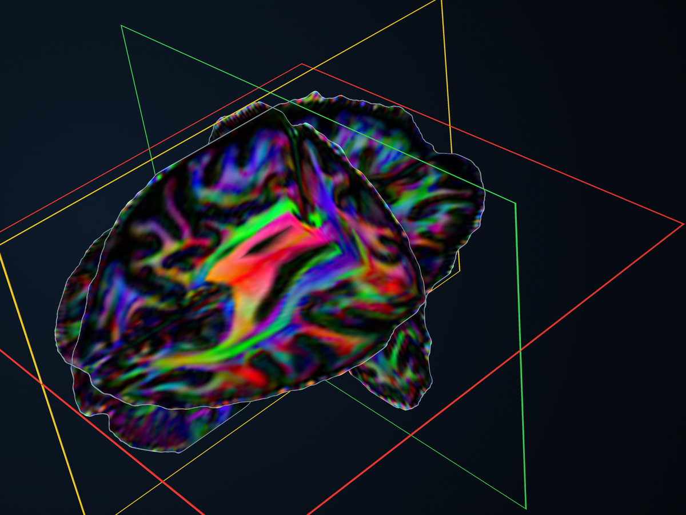
DTI · microstructure
Direction-encoded colour
Principal diffusion direction weighted by FA, from the DTI fit.
3D Slicer module · Diffusion MRI
SlicerDDSurfer builds tissue labels, brain regions and cortical surfaces from diffusion MRI, with no T1-weighted scan at analysis time. It also maps microstructure, traces white-matter pathways and builds structural connectomes.
Research software · Private pre-release · BSD-3-Clause code
Most scenes come from one run on EDDEN sub-01 (b = 0 and b ≈ 1000 volumes). The bundles are TractCloud’s, on that run’s DTI tractogram; the 3D Slicer screenshot comes from multi-shell runs. The film names free water, NODDI and kurtosis but does not show them; Outputs below does.
One subject, one space
Data: EDDEN sub-01 (OpenNeuro ds004666, CC0), AVG_mag series. The series averages five repeated acquisitions, so its SNR is higher than a typical single scan. Six images come from the film’s run (b = 0 and b ≈ 1000; 117 of 297 volumes). The others come from runs of 23 October 2026 on the same Mac: UKF on the same input; the multi-shell methods on b = 0, 1000 and 2000 (207 of 297 volumes).

DTI · microstructure
Principal diffusion direction weighted by FA, from the DTI fit.
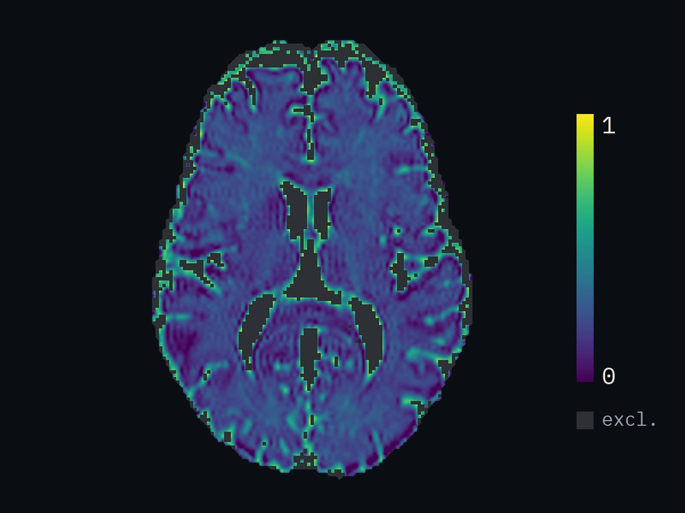
Free water · microstructure
Free-water tensor model (DIPY) on b = 0, 1000 and 2000.
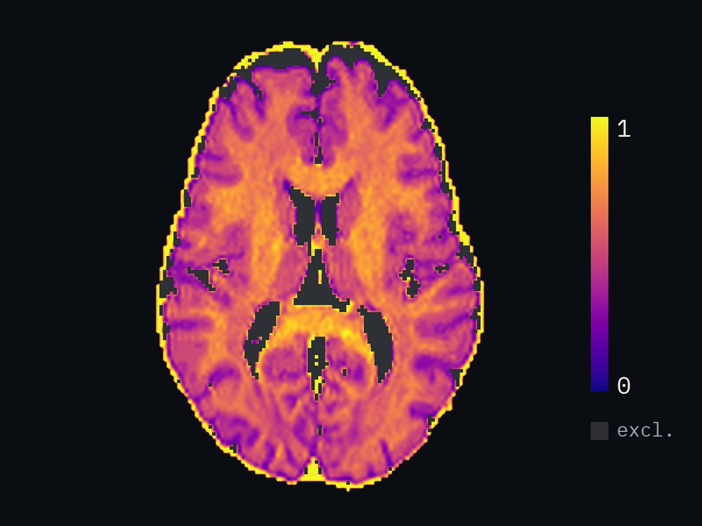
NODDI · microstructure
NDI from the NODDI fit (AMICO) on two shells.
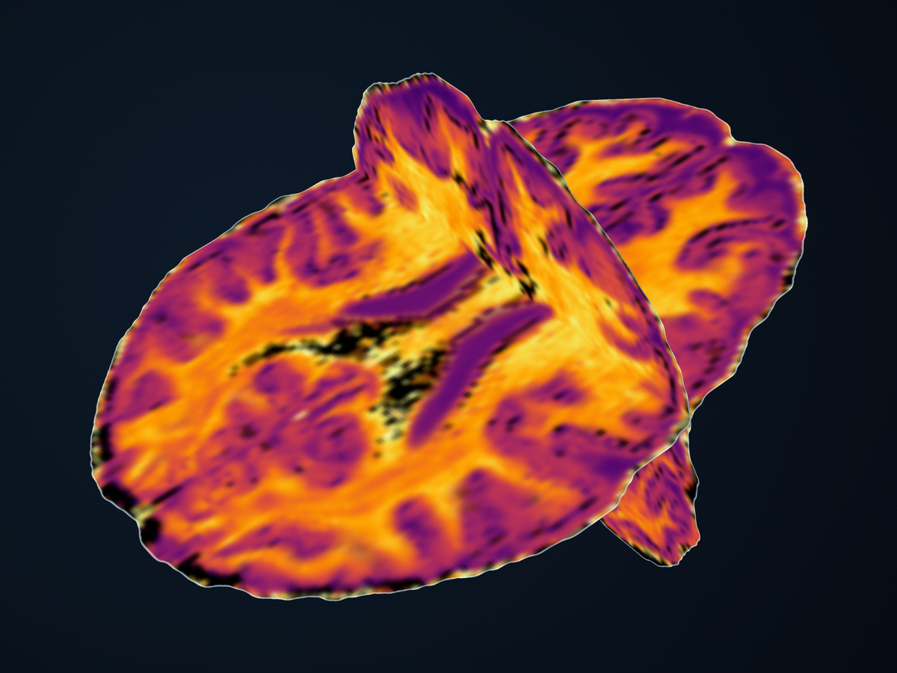
DKI · microstructure
MK from the DKI fit (DIPY, WLS).
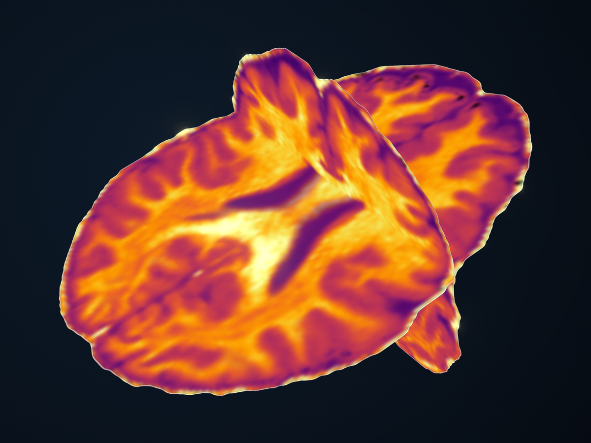
MK-Curve · microstructure
Unofficial Python port, same data. Automatic QC did not pass: 98.7% of mask voxels are valid; the check needs all.
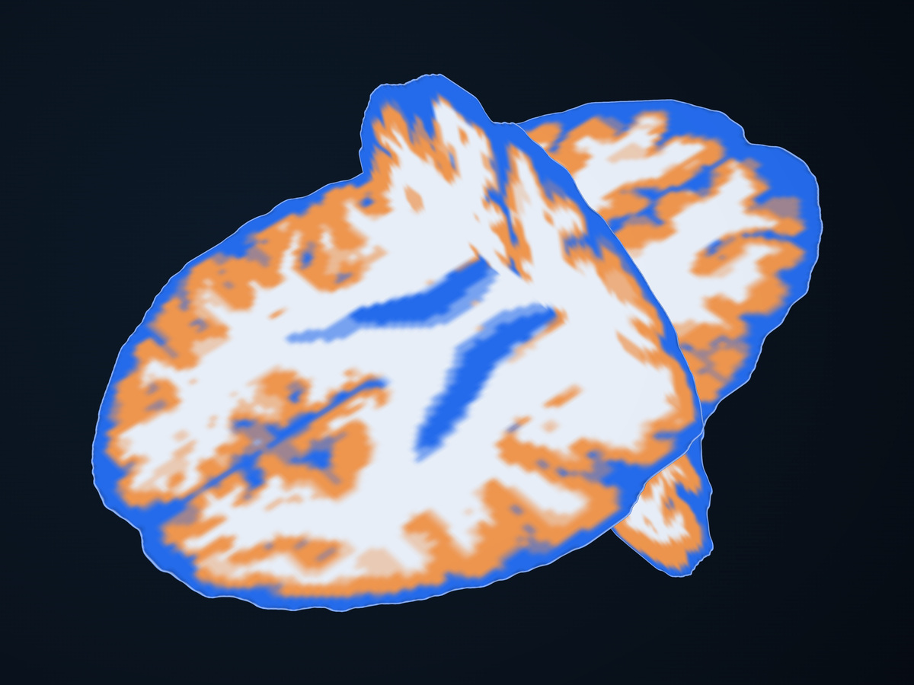
DDSeg · tissue
White matter, grey matter and CSF, predicted from DTI features.
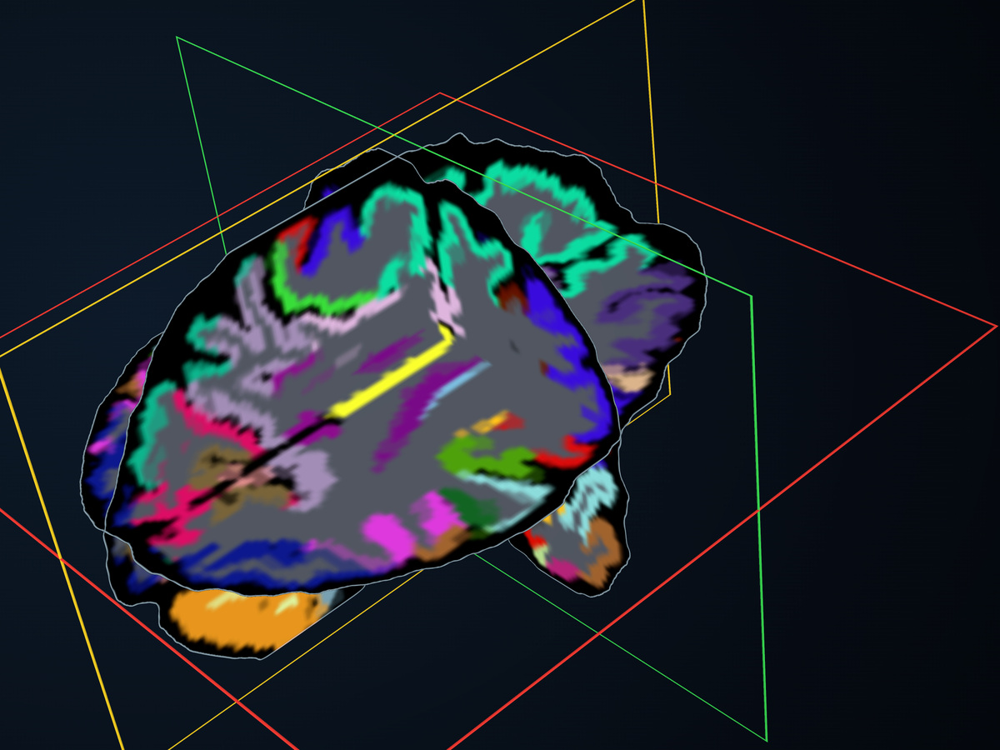
DDParcel · regions
Anatomical regions labelled in the diffusion volume.
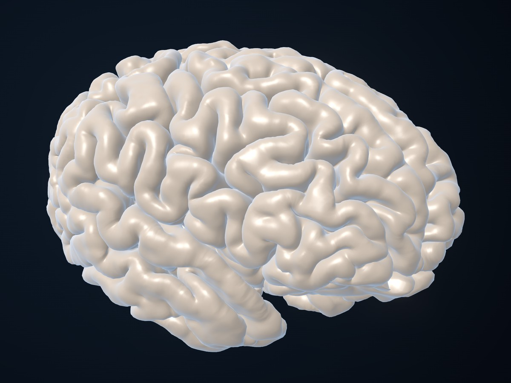
DDSurfer · surfaces
White and pial meshes in native diffusion space. Shown: the pial surface.

Tractography · DTI
Deterministic DTI tractography. Shown: a display subset of 24,000 of 130,780 streamlines.
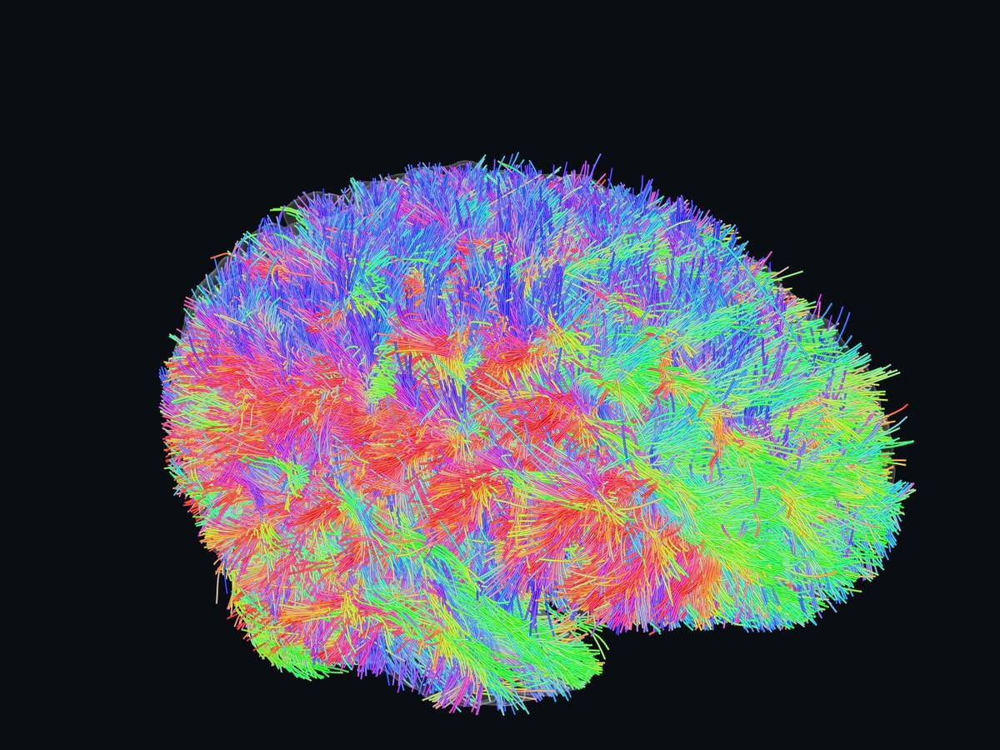
Tractography · UKF
UKFTractography. Shown: a display subset of 24,000 of 208,295 streamlines.
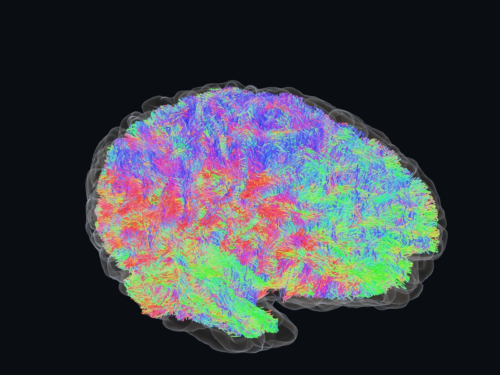
Tractography · CSD/ACT
MRtrix3 iFOD2 with ACT. Shown: 24,000 of 1,000,000 streamlines.
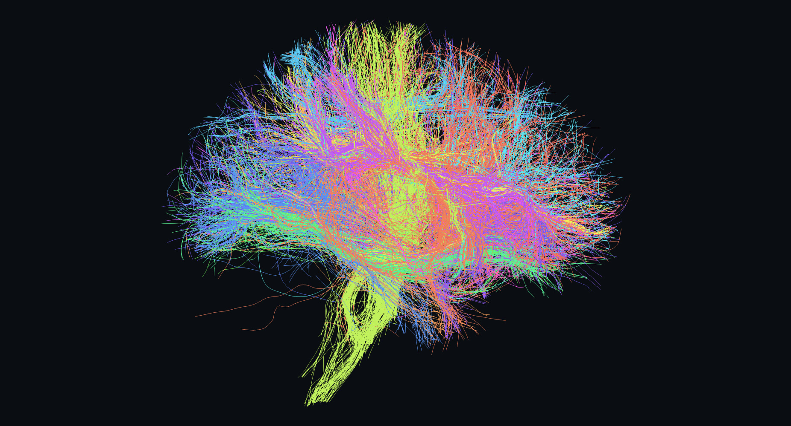
WMQL · bundles
Official WMQL queries on UKF tractography. Colours distinguish query families; a display subset is shown.
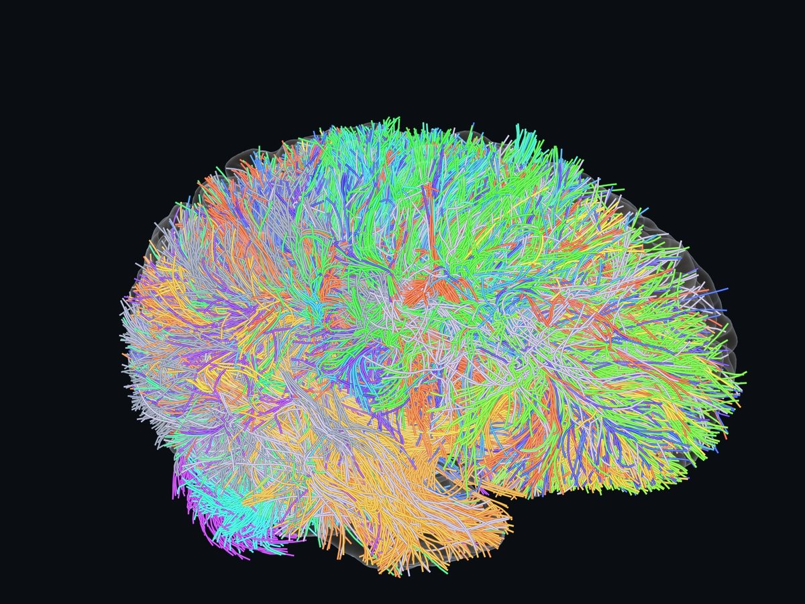
TractCloud · bundles
TractCloud on the UKF tractogram: 84,356 streamlines classified; 9,321 shown.
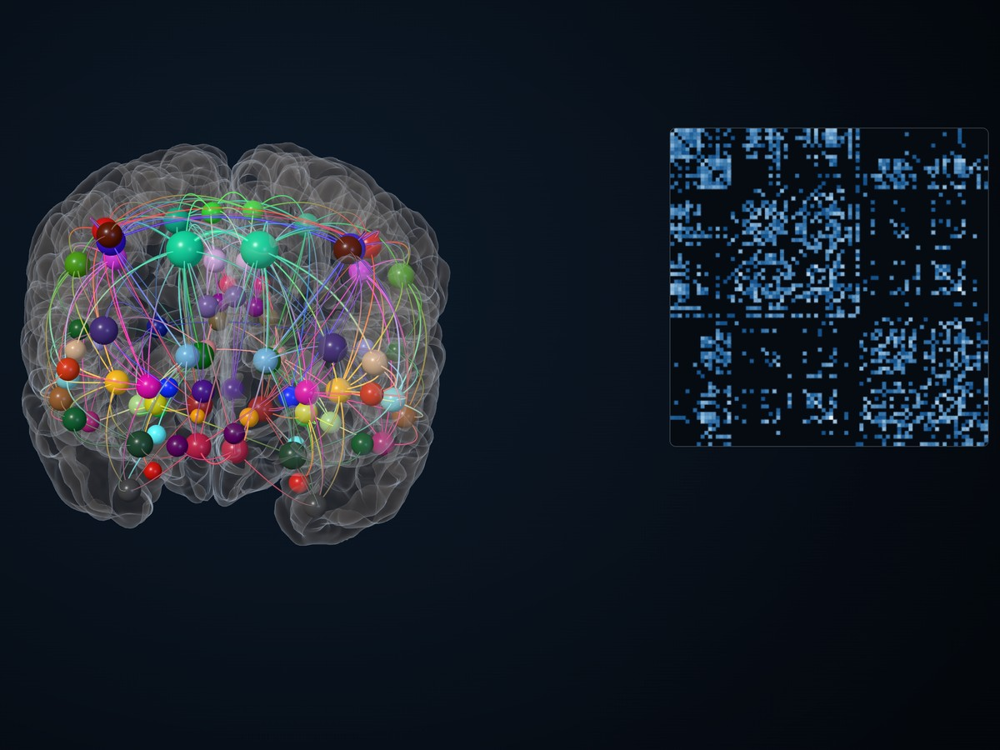
Connectome · DDParcel nodes
The 260 strongest of 854 edges are drawn; the matrix shows all 84 × 84 nodes.
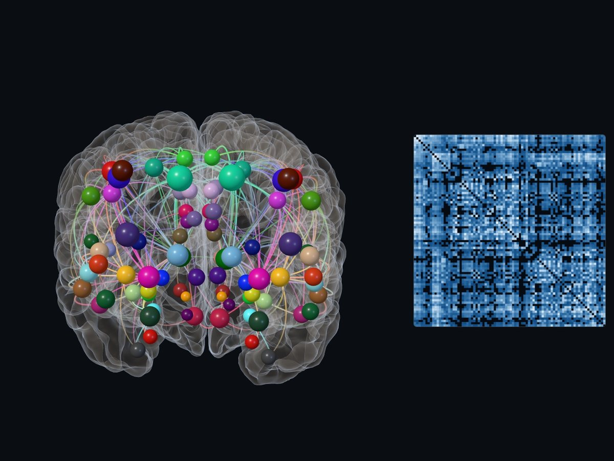
Connectome · SIFT2
From the CSD/ACT tractogram. The 260 strongest of 2,726 edges are drawn.
All images use the film’s look; colours, subsets and upsampling change the look, not the data. Automatic QC passed for every stage shown that records it, except MK-Curve. WMA also ran on the UKF tractogram but is not shown: it failed the pipeline’s sampling check (right arcuate fasciculus: 6 streamlines, minimum 20). No expert has reviewed these outputs.
Workflows
From input preparation to regional connectivity, following the protocol. Select the methods your study needs; the workflow resolves their dependencies and reuses shared preparation.
01
02
03
04
05
06
| Stage | Method | How it is integrated | Runtime / access | Reference [n] |
|---|---|---|---|---|
| Input | DICOM, NIfTI, NRRD/NHDR | Input conversion, matched-gradient validation and geometry checks. | dcm2niix or DWIConvert for DICOM | – |
| Preprocessing | DIPY | Denoising, Gibbs removal and motion correction. | Managed Python packages | [30] |
| Preprocessing | MRtrix3 / FSL | dwidenoise, mrdegibbs, topup and eddy, with acquisition-specific settings. | MRtrix3; FSL | [29] |
| Brain mask | PNL CNN (default) | Author Python backend with model and geometry handling. | Managed PNL runtime and weights | – |
| Brain mask | SynthStrip | SynthStrip inference in its isolated runtime. | SynthStrip runtime and weights | [32] |
| Brain mask | MRtrix3 dwi2mask | Native dwi2mask execution. | MRtrix3 | [29] |
| Anatomy | DDSeg | Converted PyTorch models; tissue labels and probabilities. | PyTorch; DDSeg weights | [2] |
| Anatomy | DDParcel | Author-derived Python inference with Slicer BRAINSFit registration. | PyTorch; DDParcel weights and templates | [3] |
| Anatomy | DDSurfer | Upstream Python/PyTorch reconstruction of white and pial surfaces. | PyTorch; DDSurfer weights | [1] |
| Anatomy | Surface post-processing | Native FreeSurfer components for thickness, curvature and surface atlas mapping. | Component runtime and applicable licence; full suite optional | [33] |
| Microstructure | DTI (default) | SlicerDMRI tensor fitting and scalar maps. | SlicerDMRI | [27] [28] |
| Microstructure | Free water | DIPY tensor model with equivalent WLS implementation optimizations. | DIPY; eligible multi-shell data | [4] [5] [6] [30] |
| Microstructure | NODDI | AMICO fitting; NDI, ODI, IsoVF and fit residuals. | AMICO; eligible multi-shell data | [7] [31] |
| Microstructure | DKI | DIPY WLS/OLS fitting, kurtosis maps and validity masks. | DIPY; shell/direction/rank preflight | [8] [30] |
| Microstructure | MK-Curve | Python implementation with correction curves, scalar maps and fit masks. | Bundled Python backend; DKI acquisition checks | [9] |
| Tractography | CSD / ACT / SIFT2 (default) | MRtrix3 response/FOD estimation, iFOD2 tracking, DDSeg-derived tissue constraints and SIFT2 weights. | MRtrix3; reviewed tissue priors | [10] [11] [12] [13] [14] [15] [16] [17] [18] [29] |
| Tractography | DTI deterministic | SlicerDMRI tensor preparation and DIPY tracking. | SlicerDMRI; DIPY | [28] [30] |
| Tractography | UKF two-tensor | Automatic invocation of the installed official CLI and input conversion. | UKFTractography; SlicerDMRI | [19] |
| Tractography | SAF | Python surface-constrained tracking and geometric filtering on DDSurfer meshes. | MRtrix3; post-processed native surfaces | [20] |
| Bundles | WMQL (default) | Author tract_querier and official multi-bundle queries; optional subset selection. | WMQL runtime; DDParcel labels | [21] |
| Bundles | WMA | Author ORG-atlas registration and clustering with equivalent bulk operations. | WMA; ORG atlas; UKF reference route | [22] [23] [24] [26] |
| Bundles | TractCloud | Author model inference and bundle export in an isolated Python backend. | PyTorch backend; model and centroids | [25] [22] |
| Connectome | Streamline count | Endpoint assignment to DDParcel nodes; Python or eligible MRtrix3 backend. | Matched parcellation and tractogram | [29] |
| Connectome | SIFT2-weighted count | Matrix construction using weights from the corresponding CSD/FOD tractogram. | MRtrix3; matched tracks and weights | [16] [29] |
| Connectome | Scalar and length weights | Regional edge summaries using a selected scalar map or streamline lengths. | Python API | – |
Each run checks acquisition suitability and backend-specific QC. Implementation details and validation records retain the method provenance and individual test scopes.
Choosing routes
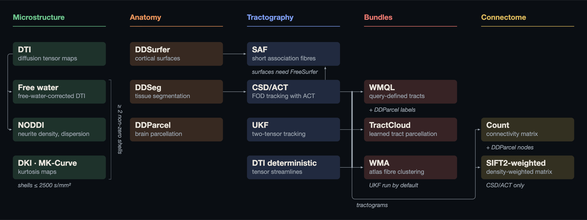
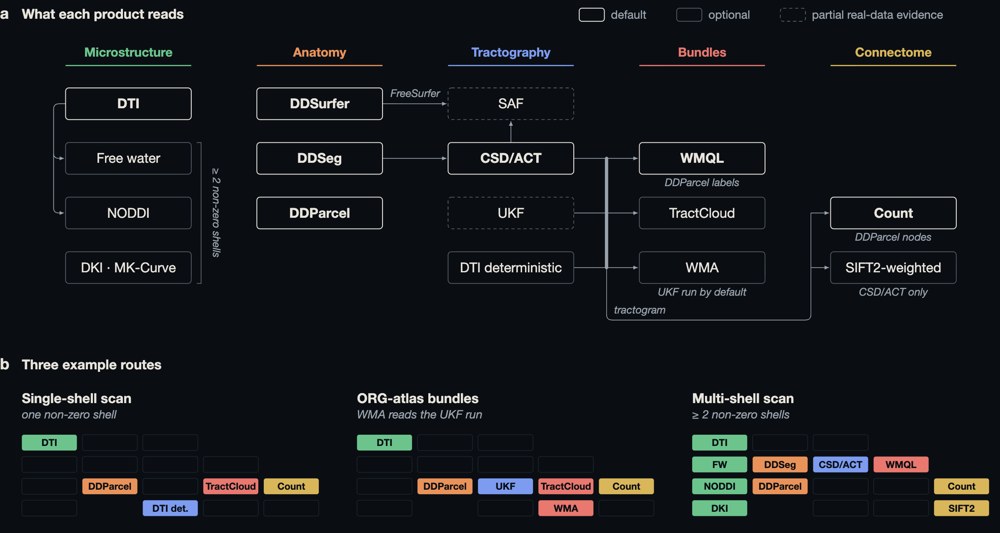
In 3D Slicer
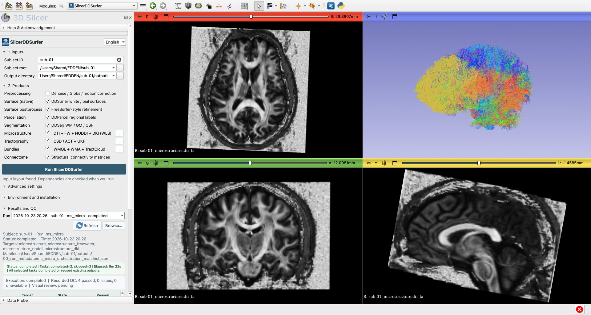
Status
The integration table under Workflows says how each method is implemented: reimplemented, ported, bundled or called.
A completed run is not a clinical assessment or proof of scientific correctness.
Measured changes, equivalence checks and limits, with each scope kept separate.
Get started
The repository is private during pre-release; you need access to clone it or open its links.
Start with 3D Slicer; the protocol reference is version 5.10. Clone the source and create a separate extension installation:
git clone https://github.com/ChengjinLii/SlicerDDSurfer.git
cd SlicerDDSurfer
python3 scripts/stage_slicer_extension.py \
--install-root ~/SlicerDDSurfer-extension --slicer-version 5.10 \
--link-mode copyReplace 5.10 with the major/minor version shown in Slicer’s About dialog. The script stages the module and reports its installation directory.
Open Edit › Application Settings › Modules › Additional module paths. Add the expanded absolute path of ~/SlicerDDSurfer-extension/SlicerDDSurfer/lib/Slicer-5.10/qt-scripted-modules, matching the version you staged.
Install SlicerDMRI and PyTorch from Slicer’s Extension Manager. Add the separate UKFTractography extension if you plan to use UKF. Restart Slicer, then open Modules › Diffusion › SlicerDDSurfer.
Enter a Subject ID and Subject root. For prepared inputs, use this layout; the output directory can remain empty to use the subject’s outputs/ folder.
sub-01/
input/
data.nii.gz
bvals
bvecs
nodif_brain_mask.nii.gz # optional; supply or generateDWI and mask must share one voxel grid. The gradient count must match the DWI volume count, and motion-corrected images need the corresponding rotated gradients.
For DICOM or NRRD/NHDR, use Advanced settings › Regions & input import › Input import / conversion. Preview the import, then prepare the inputs before analysis.
For a small first run, select only Microstructure, clear the other products and keep DTI in its ... selector. For a fuller route, choose one or several algorithms beside each product. Advanced settings contains the model and tracking parameters.
Open Environment and installation › Prepare selected analysis environment. Confirm the required tools, models and resource terms. Downloads are checked and cached for reuse. If a restart is requested, restart and select Prepare again to continue.
Offline model resources, repair and manual path overrides are under More options. An existing reviewed mask avoids installing a mask-generation backend for the DTI-only route.
Click Run SlicerDDSurfer. Missing fields are highlighted, and the log reports progress or a specific correction. Successful key products load automatically; DTI supplies FA and MD for inspection.
In Results and QC, select the run to inspect its checks and reload or replace products without duplicating scene nodes. Review mask coverage, alignment and method-specific QC before accepting results.
From the checkout, use Slicer’s Python to check a DTI-only route. Replace the two absolute paths below:
export SLICER_LAUNCHER="/path/to/Slicer"
export SUBJECT_ROOT="/path/to/sub-01"
"$SLICER_LAUNCHER" --launch PythonSlicer run_subject_pipeline.py \
--subject-root "$SUBJECT_ROOT" --subject-id sub-01 --no-user-config \
--targets microstructure --microstructure-stages dti --doctorRepeat with --plan to inspect the processing plan, then --execute to run it. Keep the same method options for all three commands.
For example, --microstructure-stages dti,noddi selects two models; --tractography-backend csd_act,ukf selects two tracking variants; and --bundle-backend wmql,wma selects two bundle methods. Their input and dependency checks still apply.
For independent subjects, use scripts/run_batch_pipeline.py --batch-root /path/to/study --jobs 2 with your chosen analysis options. The GUI processes the current subject; the batch CLI manages separate outputs and logs.
Cite
The protocol manuscript is in preparation. Cite the software version you used (CITATION.cff) and the methods you ran.
The methods, software and data references share one numbered list. Reference links in the integration table open the matching entry.
Run times
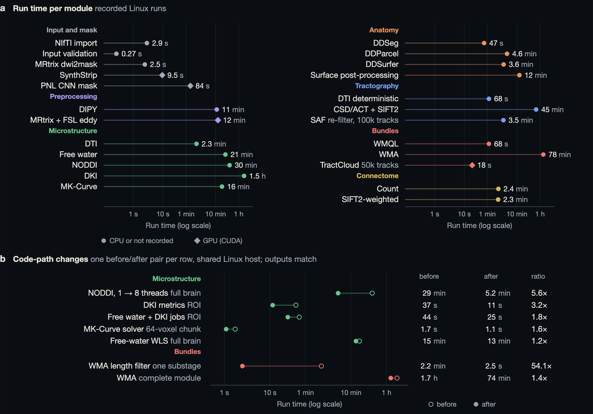
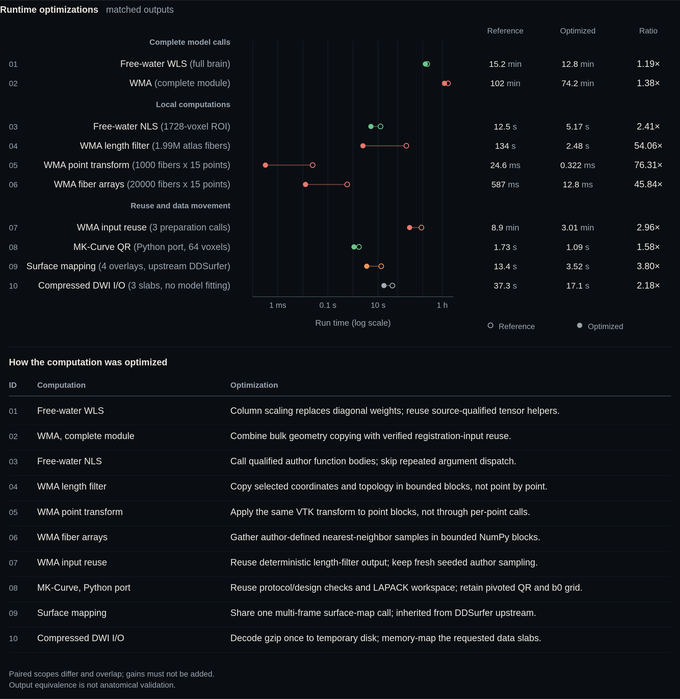
Performance
Remove repeated work, keep the computation, measure only what was tested.
Catalogue updated 25 October 2026
Download measurement data (JSON)No whole-workflow speedup has been established. Output equivalence is not anatomical validation or an increase in predictive validity.
Upstream versions rechecked on 22 October: DIPY 1.12.1, AMICO 2.1.1, SciPy 1.18.1. Each method record separates current-source checks, older timings and upstream capabilities.
Measured work
Full models, small regions and single operations are different experiments; they stay separate.
15.87% less time in this measured call. Output equivalence checked; one shared-host pair.
27.31% less time in this measured call. Output equivalence checked; one shared-host pair.
| Computation / scope | Type of change | Reference | Optimized | Measured ratio |
|---|---|---|---|---|
| Free-water WLSFull brain / record 2026-10-22 | Same-method implementation | 15.24 min | 12.82 min | 1.19x15.87% less time |
| WMA registration & classificationComplete module / record 2026-10-20 | Same-method implementation | 102.10 min | 74.22 min | 1.38x27.31% less time |
| NODDI / AMICOFull brain / record 2026-10-20 | Native threads | 29.15 min | 5.19 min | 5.61x82.19% less time |
| MK-Curve QR / Python port64-voxel numeric chunk / record 2026-10-22 | Python-port computation | 1.73 s | 1.09 s | 1.58x36.70% less time |
| DKI WLS metricsNative 24-cubed ROI / record 2026-10-22 | Existing upstream capability | 37.11 s | 11.47 s | 3.24x69.09% less time |
| Independent FW + DKI jobsNative 24-cubed ROI / record 2026-10-20 | Workflow scheduling | 43.95 s | 24.63 s | 1.78x43.96% less time |
| WMA atlas length filteringSingle substage / record 2026-10-20 | Same-method implementation | 134.29 s | 2.48 s | 54.06x98.15% less time |
| Free-water NLS dispatch1728-voxel ROI / record 2026-10-21 | Same-method implementation | 12.47 s | 5.17 s | 2.41x58.50% less time |
| WMA point transformation1000 fibers x 15 points / record 2026-10-21 | Same-method implementation | 24.6 ms | 0.322 ms | 76.31x98.69% less time |
| WMA fiber-array conversion20000 fibers x 15 points / record 2026-10-21 | Same-method implementation | 0.59 s | 12.8 ms | 45.84x97.82% less time |
| WMA registration-input reuseThree preparation calls / record 2026-10-20 | Same-method implementation | 8.90 min | 3.01 min | 2.96x66.17% less time |
| DDSurfer surface-map reuseFour left-hemisphere overlays / record 2026-10-20 | Inherited upstream optimization | 13.38 s | 3.52 s | 3.80x73.70% less time |
| Compressed DWI block readingThree slabs / record 2026-10-20 | Compressed data I/O | 37.25 s | 17.08 s | 2.18x54.15% less time |
Only Free-water and WMA are highlighted above; NODDI multithreading, Python-port comparisons and integration of existing DIPY array metrics are deliberately labeled separately. No timing here establishes higher anatomical validity.
Open a record for the reference implementation, changes, checks and limits.
What the numbers mean
A larger ratio does not make two experiments comparable.
Batch equivalent operations. Estimator, initialization, solver, precision and QC thresholds stay the same.
AMICO’s own threads, not a new NODDI algorithm. Hardware is part of the measurement.
FW, NODDI and DKI overlap once their inputs are ready. Default concurrency is one.
MK-Curve port changes are compared with earlier Python code, not the author’s MATLAB.
Still open
These measurements cover specific Linux inputs and settings. They do not replace independent scientific review.
Read the complete optimization report
The JSON is a limited public summary, not private logs or subject data.